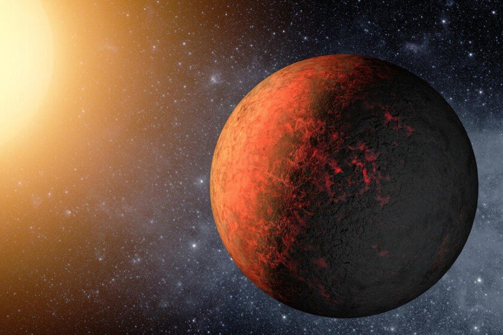

James Webb acha sinais de atmosfera em exoplaneta de lava “frio”, o HD 3167 b
Superterra a 154 anos-luz completa uma órbita em cerca de um dia terrestre; atmosfera parece redistribuir o calor.

Uma equipe das universidades de Chicago e de Maryland encontrou fortes indícios de atmosfera num exoplaneta de lava que, em tese, não deveria ter nenhuma, relata o Xataka Brasil. O HD 3167 b é uma superterra rochosa a 154 anos-luz, tão próxima de sua estrela que um ano lá dura mais ou menos um dia terrestre.
A essa distância, ventos estelares e radiação intensa deveriam ter arrancado qualquer atmosfera. Mas observações do instrumento MIRI, do Telescópio Espacial James Webb, feitas durante um eclipse secundário — quando o planeta passa por trás da estrela — indicaram que ela provavelmente existe e mostraram temperatura mais baixa que a esperada. É o mundo de lava com atmosfera mais frio já identificado.
O planeta tem rotação sincronizada: um lado vive em dia eterno e o outro na escuridão. A atmosfera parece redistribuir o calor, suavizando os extremos. Por ser pequeno e ter pouca gravidade, reter gases deveria ser ainda mais difícil, o que sugere um mecanismo ainda desconhecido.
Os pesquisadores planejam estudar outros nove exoplanetas de lava para descobrir a partir de que temperatura eles conseguem manter atmosfera, pista útil para entender os primórdios da própria Terra.